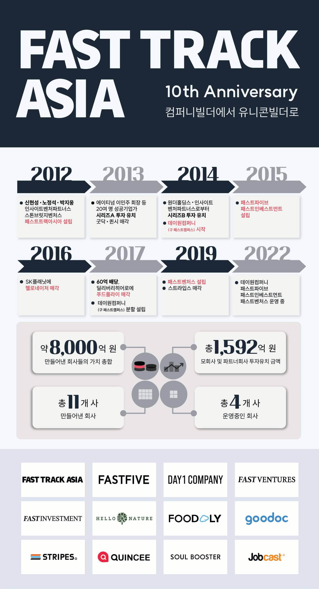

패스트트랙아시아(대표 박지웅)는 티켓몬스터 창업과 투자로 인연을 맺은 박지웅(당시 스톤브릿지캐피탈 투자 팀장), 신현성, 노정석 대표와 미국의 인사이트벤처파트너스가 설립한 회사로 스타트업을 만들고 투자하는 회사입니다. 패스트트랙아시아는 지주회사 형태로, 현재 총 6개의 파트너사(패스트캠퍼스, 패스트파이브, 스트라입스, 플라이앤컴퍼니, 헬로네이처, 패스트인베스트먼트)와 함께 하고 있습니다.
패스트트랙아시아 공동 투자자인 IT 전현직 기업가와의 방대한 네트워크를 기반으로 패스트트 랙아시아 분야별 전문성(채용/재무/데이터분석/마케팅/홍보 등)을 겸비한 핵심 스탭을 통해 파트너사들을 적극적으로 지원합니다.
1) 컴퍼니빌더

컴퍼니 빌더는 사업 아이템 선정부터, 팀원 구성, 사업 방향 설정, 투자 유치 시기 및 투자자 선택, 마케팅 전략 등을 함께 고민하는 이들을 말합니다. 다른 조력자들에 비해 스타트업 경영에 조금 더 빨리, 그리고 적극적으로 개입한다는 것이 차이점입니다.
보통은 사내 벤처 형태로 시작해 자회사 형태로 분리되는 경우가 많습니다. 컴퍼니 빌더의 시작은 미국에서 1995년에 설립된 아이디어랩(Idealab)을 꼽습니다. 단순 투자가 아닌 적극적 개입을 통해 지난 20여 년 동안 120개가 넘는 스타트업을 만들고, 30여 개 기업의 엑시트를 성공했다고 합니다.
패스트트랙아시아 박지웅 대표는 한국에서 컴퍼니빌더 모델을 최초로 도입하고 지난 10년 동안 11개의 회사를 직접 만들고, 운영하면서 투자를 지속해온 점이 인상적이다.
2. 박지웅 대표
포항공대 산업공학과를 졸업하고 스톤브릿지캐피탈에서 수석 심사역으로 4년간 재직했다. 배달의민족, 티켓몬스터, 크래프톤 같은 새로운 모바일 서비스 회사에 투자했다. 2012년 회사를 만드는 회사 ‘컴퍼니빌더’인 패스트트랙아시아를 창업해 성인교육 스타트업 데이원컴퍼니, 공유오피스 패스트파이브, 투자회사인 패스트인베스트먼트와 패스트벤처스를 경영하고 있다.
"우선 계속 타석에 들어서야 한다. 또 이전 타석에서 10타수 연속으로 안타를 치지 못했어도 11번째 타석에 들어서서 똑같이 스윙을 하는 뚝심도 있어야 한다. 이전 타석에서 변화구를 치지 못해 아웃이 됐어도 스윙 궤적을 바꾸면 안 된다. 요점은 과거에 어떤 기준을 가지고 투자를 했는지다. "
"좋은 결과로 이어지지 않았다고 해서 매번 그 기준을 바꾼다면 계속 공만 따라다니는 0할 타자가 되는 것과 마찬가지다. 과거의 성공이나 실패와 무관하게 제로베이스에서 의사결정을 내릴 수 있는 투자자가 되고 싶다. 말은 쉬운데 실천하기까지는 많은 고민과 훈련이 필요하다. 나도 그런 훈련을 계속한다. "